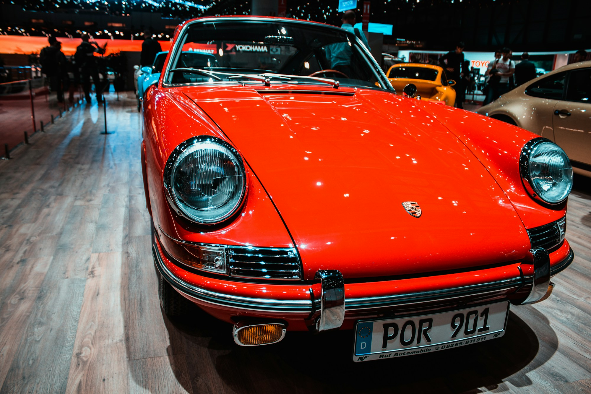

Меньше экранов. Больше автомобиля.
Почему нам по-прежнему интересны машины, в которых главное происходит между рулём, дорогой и водителем.

Источник фотографии и лицензия
Контакт с дорогой
В старой машине внимание цепляется за простые вещи: тонкий обод руля, щелчок рычага, стрелку тахометра. Здесь не обязательно искать рекордные цифры. Интерес может быть в самом действии — выбрать передачу, почувствовать поворот и услышать, как меняется звук двигателя.
Не только ностальгия
Любить автомобиль можно и без воспоминаний о времени, когда он был новым. Пропорции кузова, понятная приборная панель и характер механики работают сами по себе. Это тот случай, когда хочется разбираться в вещи, а не просто пользоваться ею.
У характера есть обратная сторона
Возраст не превращает любую машину в хорошую. Износ, коррозия и неудачный ремонт остаются проблемами, даже если автомобиль красиво выглядит на фотографии. Романтика заканчивается там, где обслуживание подменяют надеждой.
Зачем всё это сегодня
Современный автомобиль может быть удобнее и тише. Но удовольствие не сводится к удобству. Иногда оно состоит в том, чтобы ехать без спешки и замечать дорогу. Именно о таких машинах и таких поездках этот журнал.
Вернуться к материалам выпуска